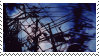
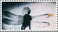
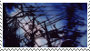
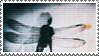

welcome to eyeorb.net
16+ preferred, i am into very mature media
please view with an open mind.
warning for js, iframes, and mobile unfriendlyness.
song of the month: power to dream by p-model
16+ preferred, i am into very mature media
please view with an open mind.
warning for js, iframes, and mobile unfriendlyness.
song of the month: power to dream by p-model
 


